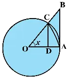

Mathematics
LIMITS AND DERIVATIVES
INTUITIVE DERIVATIVE IDEA
1Definition & Introduction
- Derivative at a point is the limiting value of average rate of change as the interval shrinks to 0 (when the limit exists).
- For motion, instantaneous velocity at time t is the limit of average velocities over intervals ending/starting at t.
- Geometrically, derivative equals slope of the tangent to the curve s vs t at that point.
- Average rate of change over interval h uses a chord; as h→0, chord approaches tangent.
- Two-sided approach (from left and right) should give the same limit when the instantaneous rate exists.
2Diagram
As h→0, slopes of chords (secants) through A and nearby points approach the slope of the tangent at A.
3Key Concepts
- ⏱️Average velocity over h: s(t+h)−s(t)h
- 🔍Instantaneous velocity: common limit of these averages as h→0 from both sides (if both sides match).
- 📉Chord slope → tangent slope: secant line through A and B approaches the tangent at A as B→A.
- 🧠For s=4.9t2, averages near t=2 approach a value between 19.551 and 19.649 m/s (NCERT table-based estimate).
4FALLING BODY: AVERAGE VELOCITY → INSTANTANEOUS VELOCITY
- Given displacement: s(t)=4.9t2 m (free fall from rest).
- Average velocity from t to t+h: s(t+h)−s(t)h.
- Compute: s(t+h)−s(t)=4.9[(t+h)2−t2]=4.9(2th+h2).
- So average velocity = 4.9(2t+h) (m/s).
- At t=2, this becomes 19.6+4.9h; as h→0 from either side, it approaches 19.6 m/s, consistent with the table-based bounds 19.551 to 19.649 m/s.
5GEOMETRIC VIEW: SECANT (CHORD) → TANGENT
- On graph of s vs t, take A at time t and B at t+h.
- Slope of chord AB = vertical changehorizontal change = s(t+h)−s(t)h.
- When |h| becomes very small, B approaches A and chord AB approaches the tangent at A.
- Therefore, if the limit exists, the derivative at t equals the slope of the tangent at that point.
6AVERAGE RATE vs INSTANTANEOUS RATE
| Basis | Average (over interval) | Instantaneous (at a point) |
|---|---|---|
| Time window | Finite interval h (e.g., 2 to 2.1 s) | Defined as a limit as h→0 |
| Formula | s(t+h)−s(t)h | limh→0 s(t+h)−s(t)h (if it exists) |
| Graph meaning | Slope of chord (secant) | Slope of tangent (as a limit of secants) |
| Dependence on endpoints | Uses two distinct times | Depends on behavior near the instant (two-sided limit) |
7Formulas
Average velocity for displacement s(t):
vavg = s(t+h)−s(t)h
Instantaneous velocity at time t (limit of average velocity):
v(t) = limh→0 s(t+h)−s(t)h
For s(t)=4.9t2:
s(t+h)−s(t)h = 4.9(2t+h)
At t=2 and take limit as h→0:
v(2) = limh→0 (19.6+4.9h) = 19.6
| s(t) = | Displacement (distance fallen) at time t (m) |
| t = | Time (s) |
| h = | Small time interval (s); can be + or − |
| vavg = | Average velocity over interval (m/s) |
| v(t) = | Instantaneous velocity at time t defined via a limit (m/s) |
Key link (physics + geometry)
Instantaneous rate at t = limh→0 s(t+h)−s(t)h = slope of tangent (when the limit exists)
9 Solved Examples
1
For s(t)=4.9t2, find the instantaneous velocity at t=2 s using the limit definition.
Solution:
Average velocity over h: vavg= s(2+h)−s(2) h .
s(2+h)= 4.9(2+h)2 =4.9(4+4h+h2) =19.6+19.6h+4.9h2.
s(2)=4.9×4=19.6.
vavg= 19.6h+4.9h2 h =19.6+4.9h.
Instantaneous velocity: v(2)=limh→0(19.6+4.9h)=19.6.
Average velocity over h: vavg= s(2+h)−s(2) h .
s(2+h)= 4.9(2+h)2 =4.9(4+4h+h2) =19.6+19.6h+4.9h2.
s(2)=4.9×4=19.6.
vavg= 19.6h+4.9h2 h =19.6+4.9h.
Instantaneous velocity: v(2)=limh→0(19.6+4.9h)=19.6.
✓ v(2)=19.6 m/s
2
Estimate average velocities near t=2 and show they approach the instantaneous value.
Solution:
Use vavg(2,h)=19.6+4.9h (m/s).
For h=−0.01: vavg=19.6−0.049=19.551 m/s.
For h=+0.01: vavg=19.6+0.049=19.649 m/s.
As |h| gets smaller, 4.9h→0, so vavg→19.6.
Use vavg(2,h)=19.6+4.9h (m/s).
For h=−0.01: vavg=19.6−0.049=19.551 m/s.
For h=+0.01: vavg=19.6+0.049=19.649 m/s.
As |h| gets smaller, 4.9h→0, so vavg→19.6.
✓ From both sides, average velocities approach 19.6 m/s; this limiting value represents the instantaneous velocity at t=2.
10⭐Important Points
- Derivative is a limit of a difference quotient, not computed by directly putting h=0.
- Both one-sided limits (h→0− and h→0+) must match for the instantaneous rate to exist.
- Average velocity corresponds to secant slope; instantaneous velocity to tangent slope (as a limit).
- For s=4.9t2, vavg(t,h)=4.9(2t+h) is linear in h.
- At t=2, table values 19.551 m/s (from left) and 19.649 m/s (from right) support the common limiting value 19.6 m/s.
11❌Common Mistakes
- Substituting h=0 inside s(t+h)−s(t)h and treating 0/0 as 0.
- Using only left or only right intervals and calling it instantaneous rate without checking both sides.
- Confusing chord AB with tangent at A for a large h; tangent is the h→0 limit.
- Mixing units: s in m, t in s, so velocity must be m/s.
12💡Memory Technique
“C→T: Chord to Tangent”
13🧮Formula Sheet
Average rate over h: s(t+h)−s(t)hInstantaneous rate at t: limh→0 s(t+h)−s(t)h (if the limit exists)Geometric meaning: instantaneous rate = slope of tangent as limit of secant slopesFree-fall model used in NCERT example: s(t)=4.9t2 mNear t=2, table-based averages approach a common value between 19.551 and 19.649 m/s
LIMIT CONCEPT BASICS
1Definition & Introduction
- Limit (intuitive meaning): the value that f(x) approaches when x is taken very close to a (usually with x≠a). Written as limx→a f(x)=l.
- Idea: choose x values very close to a (but x≠a), observe what f(x) approaches.
- Two approaches: Left-hand limit limx→a− f(x) and Right-hand limit limx→a+ f(x).
- If left-hand limit = right-hand limit = l, then limx→a f(x) exists and equals l.
- Limit may exist even if f(a) is not defined (e.g., define g(x)=|x| for x≠0; then limx→0|x|=0 though g(0) is undefined).
- Limit may exist even when f(a) is defined but different from the limit (a removable discontinuity).
2Diagram
As x→a, the graph approaches y=l (open circle); the function value f(a) may be different (separate marked point).
3Key Concepts
- 🎯Near matters: limit depends on values close to a, not on the single value at a.
- ↔️Existence test: limx→a− f(x) = limx→a+ f(x).
- 🧩Hole-type graph: curve approaches a y-value though the point may be missing or differently defined.
- 📌Polynomial/continuous functions: limit at a equals substitution value f(a).
4CORE EXAMPLES (FROM KEYWORDS)
- 1) f(x)=x2: as x→0, x2→0 ⇒ limx→0 x2=0.
- 2) Define g(x)=|x| for x≠0: values near 0 give |x|→0 ⇒ limx→0|x|=0 (even though g(0) is undefined).
- 3) h(x)=x2−4x−2, x≠2: for x near 2, values are near 4; graph shows a hole at (2,4) (removable discontinuity).
5LEFT vs RIGHT HAND LIMIT (WHEN LIMIT FAILS)
- Define f(x)=1 for x≤0, and 2 for x>0: limx→0−f(x)=1 but limx→0+f(x)=2.
- Since LHL ≠ RHL, limx→0f(x) does not exist, even though f(0)=1.
6LIMIT vs FUNCTION VALUE (AT x=a)
| Basis | Limit limx→af(x) | Value f(a) |
|---|---|---|
| What it uses | Values of f(x) for x very near a | Only the single point x=a |
| Needs f(a)? | No; can exist even if f(a) is undefined | Yes; must be defined to have a value |
| Can differ? | Yes (removable discontinuity example) | Yes; may be any assigned value |
| Graph cue | Where the curve is heading as x approaches a | Actual plotted point at x=a |
7Solved Q&A
1
Concept check: Can limx→0 |x| exist even if the function is not defined at x=0?
Answer:
Yes. If we define g(x)=|x| only for x≠0, then g(0) is undefined by domain choice.
But for x close to 0 from either side, |x| gets close to 0.
So the limit exists and equals 0 even though the function value at 0 is not defined.
Yes. If we define g(x)=|x| only for x≠0, then g(0) is undefined by domain choice.
But for x close to 0 from either side, |x| gets close to 0.
So the limit exists and equals 0 even though the function value at 0 is not defined.
✓ limx→0|x|=0 can exist even when g(0) is undefined (domain restricted).
2
Concept check: When does limx→af(x) fail to exist for a piecewise function?
Answer:
Compute the left-hand limit using values with x<a and the right-hand limit using values with x>a.
If the two one-sided limits are different, there is no single value that f(x) approaches.
Then the limit at a does not exist, even if f(a) is defined.
Compute the left-hand limit using values with x<a and the right-hand limit using values with x>a.
If the two one-sided limits are different, there is no single value that f(x) approaches.
Then the limit at a does not exist, even if f(a) is defined.
✓ If LHL ≠ RHL, then the limit at a does not exist.
8⭐Important Points
- Limit is about approach: use x near a, not necessarily at a.
- To claim limx→a exists, check both sides (LHL and RHL).
- For piecewise functions, compute LHL and RHL separately from definition/graph.
- A removable discontinuity: limit exists; function value may be undefined or assigned differently.
- A function value f(a) can exist even when the limit does not (jump at a).
9❌Common Mistakes
- Assuming limx→af(x) always equals f(a), even for holes or piecewise definitions.
- Checking only one side (usually right side) and declaring the limit exists.
- Mixing up: "limit exists" vs "function value exists" (they are independent).
- Using a wrong domain example (e.g., saying |x| is undefined at 0 without stating a domain restriction).
10💡Memory Technique
“N-E-A-R rule for limits”
11📌Quick Recap
Limit is about approach: limx→af(x) depends on values near a, not necessarily on f(a).LHL: limx→a−f(x) (approach from x<a).RHL: limx→a+f(x) (approach from x>a).Existence: limx→a exists iff LHL = RHL.Removable discontinuity: the limit can exist even if f(a) is undefined or defined differently.Jump discontinuity: if LHL ≠ RHL, the (two-sided) limit does not exist, even if f(a) is defined.
ONE-SIDED LIMITS
1Definition & Introduction
- Left-hand limit: limx→a− f(x) is the value suggested by f(x) when x approaches a using only x<a.
- Right-hand limit: limx→a+ f(x) is the value suggested by f(x) when x approaches a using only x>a.
- The (two-sided) limit limx→af(x) exists iff both one-sided limits exist and are equal.
- If limx→a−f(x) ≠ limx→a+f(x), then limx→af(x) does not exist (typically a jump at a).
- A limit depends on values near a; it may differ from f(a) or exist even when f(a) is undefined.
2Diagram
Example: f(x)=1 for x≤0, 2 for x>0 shows LHL ≠ RHL, so limit at 0 does not exist.
3Key Concepts
- ←Approach from left: use x values like a−0.1, a−0.01, ...
- →Approach from right: use x values like a+0.1, a+0.01, ...
- ⧉In a piecewise function, the rule may change at the boundary point.
- ✕If LHL and RHL are different, the two-sided limit is DNE.
4HOW TO EVALUATE ONE-SIDED LIMITS (EXAM METHOD)
- Identify the point a and the rule valid just left of a and just right of a.
- Compute limx→a−f(x) using only the expression for x<a.
- Compute limx→a+f(x) using only the expression for x>a.
- If both values match, the two-sided limit equals the common value; otherwise write DNE.
5WHEN LIMIT DOES NOT EXIST (JUMP AT THE POINT)
- If left side approaches L and right side approaches R with L≠R, there is no single two-sided limit.
- A limit can fail even if f(a) is defined (function value does not control the limit).
- Graph cue: near x=a, the curve approaches two different y-levels from left and right.
6LEFT-HAND vs RIGHT-HAND LIMIT vs (TWO-SIDED) LIMIT
| Basis | Left-hand limit | Right-hand limit |
|---|---|---|
| Notation | limx→a−f(x) | limx→a+f(x) |
| Direction | Approach with x<a | Approach with x>a |
| Which values of f matter? | Values of f(x) for x just less than a | Values of f(x) for x just greater than a |
| Two-sided limit | If LHL equals RHL, the common value is limx→af(x) | If RHL equals LHL, the common value is limx→af(x) |
7Solved Q&A
1
For f(x) = 1 for x≤0 and 2 for x>0, find LHL and RHL at 0. Does limx→0f(x) exist?
Answer:
As x→0−, we use the rule for x≤0, so f(x) stays 1 near 0 from the left.
So limx→0−f(x) = 1.
As x→0+, we use the rule for x>0, so f(x) stays 2 near 0 from the right.
So limx→0+f(x) = 2.
Since the one-sided limits are unequal, the two-sided limit does not exist.
As x→0−, we use the rule for x≤0, so f(x) stays 1 near 0 from the left.
So limx→0−f(x) = 1.
As x→0+, we use the rule for x>0, so f(x) stays 2 near 0 from the right.
So limx→0+f(x) = 2.
Since the one-sided limits are unequal, the two-sided limit does not exist.
✓ limx→0−f(x)=1, limx→0+f(x)=2, so limx→0f(x) does not exist.
2
Let f(x) = x−2 for x<0, f(0)=0, and f(x)=x+2 for x>0. Find one-sided limits at 0 and decide existence of limx→0f(x).
Answer:
For x<0, the expression is x−2, so as x→0−, the values approach −2.
Thus limx→0−f(x) = −2.
For x>0, the expression is x+2, so as x→0+, the values approach 2.
Thus limx→0+f(x) = 2.
Since −2 ≠ 2, the two-sided limit at 0 does not exist; the value f(0)=0 does not change this.
For x<0, the expression is x−2, so as x→0−, the values approach −2.
Thus limx→0−f(x) = −2.
For x>0, the expression is x+2, so as x→0+, the values approach 2.
Thus limx→0+f(x) = 2.
Since −2 ≠ 2, the two-sided limit at 0 does not exist; the value f(0)=0 does not change this.
✓ limx→0−f(x)=−2, limx→0+f(x)=2 ⇒ limx→0f(x) does not exist.
8⭐Important Points
- Compute LHL and RHL separately; each uses only its own side’s behaviour near a.
- Two-sided limit exists iff both one-sided limits exist and are equal.
- Limit depends on nearby values, so it may differ from f(a) or exist even if f(a) is undefined.
- If the domain allows only one side (e.g., only x>0), only that one-sided limit is meaningful.
9❌Common Mistakes
- Assuming f(a) equals the limit without checking both sides.
- Computing only one side but writing the two-sided notation limx→a.
- Using the wrong piece of a piecewise function near the boundary point.
- Concluding DNE just because f(a) is not defined (the limit may still exist).
10💡Memory Technique
“Mnemonic: Left uses Less-than”
11📌Quick Recap
Left-hand limit: approach a using only x<a values.Right-hand limit: approach a using only x>a values.Two-sided limit exists iff LHL = RHL (and both are finite real numbers).f(a) may be different from the limit, or even be undefined, without affecting whether the limit exists.For piecewise functions, check the rule that applies on each side of the point separately.
LIMIT EVALUATION EXAMPLES
1Definition & Introduction
- The limit limx→a f(x) is the value f(x) approaches when x is near a, not necessarily at a.
- Table idea: compute f(x) for x slightly less than and slightly greater than a and observe the approached value.
- Graph idea: as x→a, the curve approaches a height l; that height is the limit.
- Left-hand limit limx→a− and right-hand limit limx→a+ must be equal for the (two-sided) limit to exist.
- Even if f(a) is defined, it may differ from the limit; the limit depends on nearby values.
2Diagram
Graph view: limit is approached height; f(a) can be a different plotted point.
3Key Concepts
- 📋Table method: choose a±0.1, a±0.01, a±0.001; compare LHL and RHL trends.
- 📈Graph method: move along the curve toward x=a; the approached y-value is the limit.
- ↔️Existence test: if LHL = RHL = l, then limx→af(x) exists and equals l.
- 🧩Use limit laws: evaluate sums/products/quotients by taking limits of parts when those limits exist.
- ⚠️f(a) can differ from the limit in modified/piecewise definitions (removable discontinuity).
4ILLUSTRATION QUICK SET (TABLE/GRAPH INTUITION)
- Illustration 1: f(x)=x+10 ⇒ limx→5f(x)=15.
- Illustration 2: f(x)=x3 ⇒ limx→1x3=1.
- Illustration 3: f(x)=3x ⇒ limx→23x=6.
- Illustration 6: limx→π/2sinx=1 (radians).
- Illustration 7: f(x)=x+cosx ⇒ limx→0(x+cosx)=1.
5REMOVABLE DISCONTINUITY EXAMPLE (SOURCE h(x))
- Let h(x)=(x2−4)/(x−2), x≠2. Values near 2 are near 4 (hole at x=2).
- Algebra: x2−4=(x−2)(x+2), so for x≠2, h(x)=x+2.
- Hence limx→2h(x)=limx→2(x+2)=4, but h(2) is not defined unless separately defined.
6LIMIT vs FUNCTION VALUE
| Situation at x=a | limx→af(x) | f(a) |
|---|---|---|
| Continuous (e.g. x+10, x3, 3x, x2+x) | Exists; equals nearby approached value | Same as limit (direct substitution works) |
| Removable discontinuity (hole) (e.g. (x2−4)/(x−2) at x=2) | Exists (LHL=RHL) | May be undefined or defined but different |
| Jump (different LHL, RHL) (piecewise step) | Does not exist (two-sided) | May still be defined |
7Formulas
Two-sided limit exists only when both one-sided limits match.
limx→af(x) exists ⇔ limx→a−f(x) = limx→a+f(x) = l
If limx→af(x) and limx→ag(x) exist, limit laws apply.
limx→a[f(x)+g(x)] = limx→af(x) + limx→ag(x)
Product law (Theorem 1).
limx→a[f(x)·g(x)] = (limx→af(x))·(limx→ag(x))
Quotient law (denominator limit nonzero) (Theorem 1).
limx→af(x)g(x) = limx→af(x)limx→ag(x) , if limx→ag(x) ≠ 0
| a = | Point being approached on x-axis |
| l = | Common approached value (the limit) |
| limx→a− = | Left-hand limit (x approaches a from values <a) |
| limx→a+ = | Right-hand limit (x approaches a from values >a) |
Exam core
limx→af(x) exists ⇔ LHL = RHL; and it may still be ≠ f(a)
9 Solved Examples
1
Using a table idea, estimate
limx→2 3x
using x=1.99 and 2.01.
Solution:
For x=1.99, 3x=3×1.99=5.97.
For x=2.01, 3x=3×2.01=6.03.
Both sides approach 6, so the two-sided limit is 6.
Since 3x is continuous, direct substitution gives the exact limit: 3×2=6.
For x=1.99, 3x=3×1.99=5.97.
For x=2.01, 3x=3×2.01=6.03.
Both sides approach 6, so the two-sided limit is 6.
Since 3x is continuous, direct substitution gives the exact limit: 3×2=6.
✓
limx→23x = 6
2
Evaluate
limx→2
x2−4
x−2
given the expression is defined only for x≠2.
Solution:
Factor: x2−4 =(x−2)(x+2).
For x≠2, cancel (x−2): the expression equals x+2.
Now take the limit: limx→2 (x+2)=4.
Factor: x2−4 =(x−2)(x+2).
For x≠2, cancel (x−2): the expression equals x+2.
Now take the limit: limx→2 (x+2)=4.
✓
limx→2
x2−4
x−2
= 4
10⭐Important Points
- Two-sided limit needs approach from both sides unless domain allows only one side (e.g. x>0).
- If LHL ≠ RHL, write: “two-sided limit does not exist” even if f(a) is defined.
- For polynomials/linear functions and sin/cos at standard points, direct substitution gives the limit (continuity).
- While using trig limits/values here, keep angles in radians (as stated in the question).
- For removable forms like (x2−4)/(x−2), simplify first (factor/cancel), then substitute.
11❌Common Mistakes
- Checking only one side and concluding a two-sided limit without verifying the other side.
- Mixing up f(a) with limx→af(x) in piecewise/modified definitions.
- Cancelling terms at the point where the expression is not defined (e.g. cancelling and then claiming original value at x=2 exists).
- Using degree mode instead of radians while evaluating sin(π/2) type limits.
12💡Memory Technique
“LHL–RHL–THEN VALUE”
13🧮Formula Sheet
Two-sided limit exists ⇔ limx→a−f(x) = limx→a+f(x).Sum law: limx→a(f+g) = limx→af + limx→ag (when both exist).Product law: limx→a(f·g) = (limx→af)(limx→ag) (when both exist).Quotient law: limx→a(f/g) = (limx→af)/(limx→ag) if limx→ag≠0.Removable case: if h(x)=(x2−4)/(x−2), x≠2, then h(x)=x+2 for x≠2, so limx→2h(x)=4.Illustration 1: limx→5(x+10)=15.Illustration 2: limx→1x3=1.Illustration 3: limx→23x=6.
ALGEBRA OF LIMITS (THEOREM 1)
1Definition & Introduction
- Algebra of limits: if limx→a f(x) and limx→a g(x) exist, then limits combine by +, −, ×, ÷ (with nonzero denominator).
- These are stated as Theorem 1 in section 12.3.1 and are used without proof.
- Quotient rule needs limx→a g(x) ≠ 0; otherwise the law cannot be applied directly.
- Constant multiple is a special case of product: multiplying by λ pulls outside the limit.
- Use these laws to simplify expressions into known limits or direct substitution (when valid).
2Diagram
Flow: if component limits exist, combine using Theorem 1; check denominator-limit ≠ 0 before dividing.
3Key Concepts
- ➕Sum/difference: take limits termwise when both component limits exist.
- ✖Product: limit of product = product of limits (existence assumed).
- ➗Quotient: allowed only if denominator-limit is not zero.
- λConstant multiple: limx→a [λf(x)] = λ limx→a f(x).
4THEOREM 1 (12.3.1): LIMIT LAWS (NO PROOF)
- Sum: limx→a[f(x)+g(x)] = limx→af(x) + limx→ag(x).
- Difference: limx→a[f(x)−g(x)] = limx→af(x) − limx→ag(x).
- Product: limx→a[f(x)·g(x)] = ( limx→af(x) )·( limx→ag(x) ).
- Quotient: limx→af(x)g(x) = limx→af(x)limx→ag(x) only if limx→ag(x) ≠ 0.
- Constant multiple (λ): limx→a[λf(x)] = λ limx→af(x).
5QUICK APPLICATION CHECKLIST
- Step 1: Ensure limx→af(x) and limx→ag(x) exist (finite).
- Step 2: For quotient, verify limx→ag(x) ≠ 0 before splitting limits.
- Step 3: Pull out constants: λ can be taken outside early to simplify arithmetic.
- Step 4: After using laws, compute remaining basic limits (often by substitution).
6WHEN YOU CAN SPLIT A LIMIT (COMMON EXAM TRAP)
| Form | Allowed if | Result |
|---|---|---|
| f(x) + g(x) | Both limits exist | Split into sum of limits |
| f(x)·g(x) | Both limits exist | Split into product of limits |
| f(x)g(x) | Both limits exist and denominator-limit ≠ 0 | Split into quotient of limits |
7Formulas
Special case (constant multiple) comes from product law with g(x)=λ (constant):
limx→a[λ·f(x)] = limx→a[g(x)·f(x)]
= ( limx→ag(x) )·( limx→af(x) ) = λ·limx→af(x)
| f(x), g(x) = | Real-valued functions defined near a (possibly not at a) |
| a = | Point to which x tends |
| λ = | Real constant (constant function value) |
Most important safety condition
limx→af(x)g(x) = limx→af(x)limx→ag(x) if limx→ag(x) ≠ 0
8Solved Examples
1
Evaluate using Theorem 1: limx→2 [ (3x2−5x+1) + 4(2x−7) ].
Solution:
Let f(x)=3x2−5x+1 and g(x)=4(2x−7). Both are polynomials ⇒ limits exist.
By sum and constant multiple laws:
limx→2[f(x)+g(x)] = limx→2f(x) + limx→24(2x−7).
Compute by substitution:
limx→2f(x) = 3(2)2−5(2)+1 = 12−10+1 = 3.
limx→24(2x−7) = 4(2·2−7)=4(4−7)=4(−3)=−12.
Add: 3 + (−12) = −9.
Let f(x)=3x2−5x+1 and g(x)=4(2x−7). Both are polynomials ⇒ limits exist.
By sum and constant multiple laws:
limx→2[f(x)+g(x)] = limx→2f(x) + limx→24(2x−7).
Compute by substitution:
limx→2f(x) = 3(2)2−5(2)+1 = 12−10+1 = 3.
limx→24(2x−7) = 4(2·2−7)=4(4−7)=4(−3)=−12.
Add: 3 + (−12) = −9.
✓ −9
2
Evaluate using Theorem 1 (check denominator): limx→1 (2x+3)(x2−1) 5(x−1) .
Solution:
First check denominator-limit: limx→15(x−1)=5(1−1)=0, so quotient law cannot be applied directly in split form.
Simplify algebraically (allowed for x≠1):
x2−1=(x−1)(x+1).
So expression becomes (2x+3)(x−1)(x+1)5(x−1) = (2x+3)(x+1)5 for x≠1.
Now apply limit (constant denominator 5 ≠ 0):
limx→1 (2x+3)(x+1)5 = (2·1+3)(1+1)5.
Compute: (5·2)/5 = 2.
First check denominator-limit: limx→15(x−1)=5(1−1)=0, so quotient law cannot be applied directly in split form.
Simplify algebraically (allowed for x≠1):
x2−1=(x−1)(x+1).
So expression becomes (2x+3)(x−1)(x+1)5(x−1) = (2x+3)(x+1)5 for x≠1.
Now apply limit (constant denominator 5 ≠ 0):
limx→1 (2x+3)(x+1)5 = (2·1+3)(1+1)5.
Compute: (5·2)/5 = 2.
✓ 2
9⭐Important Points
- Theorem 1 assumes the individual limits exist; you cannot use it to prove existence.
- Quotient law needs denominator-limit ≠ 0; otherwise simplify first or use other methods.
- Constant multiple λ always pulls out: simplifies long expressions quickly.
- If a function is polynomial, limit at a equals value at a (via repeated use of laws).
- Do not confuse limx→af(x) with f(a); they may differ even if both defined.
10❌Common Mistakes
- Splitting a quotient when denominator-limit becomes 0 (illegal use of (iv)).
- Assuming laws work even when one of the limits does not exist.
- Forgetting λ factor outside the limit, leading to sign/scale errors.
- Cancelling factors without stating restriction x≠a while simplifying.
11💡Memory Technique
“Mnemonic: "SMDP-Q (Q needs NZ)"”
12🧮Formula Sheet
limx→a[f(x)+g(x)] = limx→af(x) + limx→ag(x)limx→a[f(x)−g(x)] = limx→af(x) − limx→ag(x)limx→a[f(x)·g(x)] = ( limx→af(x) )·( limx→ag(x) )limx→af(x)g(x) = limx→af(x)limx→ag(x), if limx→ag(x) ≠ 0limx→a[λf(x)] = λ limx→af(x)
POLYNOMIAL AND RATIONAL LIMITS
1Definition & Introduction
- Polynomial: If p(x) is a polynomial, then limx→a p(x) = p(a).
- Power law: For any natural number n, limx→a xn = an.
- Rational: If f(x)=g(x)h(x) with polynomials g, h, and h(a)≠0, then limx→a f(x)=g(a)h(a).
- If h(a)=0 and g(a)≠0, the limit is not finite; it may diverge to ±∞ or may not exist if one-sided behaviors differ.
- If g(a)=0 and h(a)=0, it is a 0/0 indeterminate form; factor and cancel common powers of (x−a).
- After cancelling, evaluate the simplified expression at x=a (only for the limit; the original function may be undefined at a).
2Diagram
Decision flow for limits of rational functions at x = a.
3Key Concepts
- ✅Polynomials are continuous everywhere ⇒ limit equals value.
- ➗For gh, direct substitution works only if h(a)≠0.
- 🧩0/0 means factor: pull out (x−a)k from numerator/denominator.
- ⚖️Compare powers: higher leftover power upstairs → limit 0; higher downstairs → unbounded/diverges.
- 🧠Cancel only common factors, never cancel terms joined by + or −.
4POLYNOMIAL LIMITS (12.3.2 CORE IDEA)
- If p(x) = a0 + a1x + … + anxn, then limx→a p(x) = p(a).
- Reason: limits respect + and ×; and limx→a xn = an.
- So for polynomials, no special technique: just substitute x=a.
5RATIONAL LIMITS: THE 0/0 FACTOR-CANCELLATION RULE
- For f(x)=g(x)h(x), first try substitution: if h(a)≠0 ⇒ limx→a f(x)=g(a)h(a).
- If h(a)=0 and g(a)≠0 ⇒ limit is not finite; it may diverge to ±∞ or may fail to exist as a two-sided limit.
- If g(a)=0 too ⇒ 0/0: write g(x)=(x−a)kg1(x), h(x)=(x−a)lh1(x).
- After cancellation: if k=l ⇒ finite limit = g1(a)h1(a); if k>l ⇒ 0; if k<l ⇒ unbounded/diverges (not a finite real limit).
6Limits: Polynomial vs Rational (key exam contrast)
| Basis | Polynomial p(x) | Rational g(x)h(x) |
|---|---|---|
| Direct substitution | Always works | Works only if h(a)≠0 |
| At x=a | Continuous everywhere | May be discontinuous/undefined if h(a)=0 |
| Indeterminate form | Not needed | 0/0 requires factor & cancel |
| When h(a)=0, g(a)≠0 | Not applicable | Limit is not a finite real number; may diverge to ±∞ or may not exist (one-sided behaviors differ) |
| When both vanish | Not applicable | Compare powers of (x−a) after factoring |
7Formulas
Power limit used inside polynomial evaluation:
limx→a xn = an (n∈N)
Polynomial limit (built from sums/products):
If p(x) = Σi=0n aixi, then limx→a p(x) = Σi=0n aiai = p(a)
Rational limit when denominator not zero:
If h(a)≠0, then limx→a g(x)h(x) = g(a)h(a)
0/0 cancellation template (k,l are max powers of (x−a)):
g(x)h(x)=(x−a)kg1(x)(x−a)lh1(x)=(x−a)k−l g1(x)h1(x)
| p(x) = | Polynomial function (degree n) |
| g(x), h(x) = | Polynomials in a rational function gh |
| a = | Point where limit is evaluated |
| k, l = | Highest powers of (x−a) dividing g and h |
Fastest exam rule
Polynomial: limx→a p(x) = p(a)
Rational: if h(a)≠0 ⇒ substitute; if 0/0 ⇒ factor & cancel.
Rational: if h(a)≠0 ⇒ substitute; if 0/0 ⇒ factor & cancel.
8Graph
Polynomials are continuous: as x→a along the curve, y approaches p(a).
9Solved Examples
1
Example 1 (Polynomial): Evaluate limx→−1 [1 + x + x2 + … + x10].
Solution:
This is a polynomial in x (finite sum).
So limx→−1 equals the value at x=−1.
Compute: 1+(−1)+(−1)2+…+(−1)10.
Even powers give 1; odd powers give −1.
Even exponents: 0,2,4,6,8,10 → 6 terms. Odd exponents: 1,3,5,7,9 → 5 terms.
Sum = 6(1) + 5(−1) = 1.
This is a polynomial in x (finite sum).
So limx→−1 equals the value at x=−1.
Compute: 1+(−1)+(−1)2+…+(−1)10.
Even powers give 1; odd powers give −1.
Even exponents: 0,2,4,6,8,10 → 6 terms. Odd exponents: 1,3,5,7,9 → 5 terms.
Sum = 6(1) + 5(−1) = 1.
✓ 1
2
Example 2 (Rational 0/0): Evaluate limx→2 x3 − 4x2 + 4xx2 − 4.
Solution:
Direct substitution gives 0/0 ⇒ factor.
Numerator: x3 − 4x2 + 4x = x(x2 − 4x + 4) = x(x−2)2.
Denominator: x2 − 4 = (x−2)(x+2).
Cancel one common factor (x−2) (valid for limit since x≠2 during cancellation).
Expression becomes x(x−2)(x+2).
Now substitute x=2: 2(0)4 = 0.
Direct substitution gives 0/0 ⇒ factor.
Numerator: x3 − 4x2 + 4x = x(x2 − 4x + 4) = x(x−2)2.
Denominator: x2 − 4 = (x−2)(x+2).
Cancel one common factor (x−2) (valid for limit since x≠2 during cancellation).
Expression becomes x(x−2)(x+2).
Now substitute x=2: 2(0)4 = 0.
✓ 0
10⭐Important Points
- For any polynomial p, limx→a p(x) is obtained by substitution.
- For rational gh, check h(a) first; do not start factoring blindly.
- 0/0 is the main case here where algebraic simplification can reveal a finite limit.
- When cancelling (x−a), remember the function may be undefined at a, but the limit can still exist.
- If after cancellation a factor (x−a) remains in the numerator, the limit becomes 0.
11❌Common Mistakes
- Using g(a)h(a) even when h(a)=0.
- Cancelling terms like (x2−4) with (x−2) without factoring correctly.
- Cancelling (x−a) and then treating the cancelled factor as if substitution at x=a was done before simplifying.
- Assuming 0/0 always gives 1; it can be 0, finite nonzero, unbounded, or not exist.
12💡Memory Technique
“SUB-FAC-COMP: a 3-step hook”
13🧮Formula Sheet
limx→a xn = an (n∈N)limx→a [a0 + a1x + … + anxn] = a0 + a1a + … + ananIf h(a)≠0, then limx→a g(x)h(x) = g(a)h(a)0/0: write g(x)=(x−a)kg1(x), h(x)=(x−a)lh1(x)If k=l: limit = g1(a)h1(a)If k>l: limit = 0; if k<l: limit is unbounded/diverges (not a finite real limit)
KEY LIMIT: (xN−aN)/(x−a)
1Definition & Introduction
- Core result (key limit): limx→a xn−anx−a = nan−1 for positive integer n.
- Idea: factorise xn−an as (x−a)(sum); cancel (x−a) for x≠a near the limit.
- Inside bracket there are n terms: xn−1 + xn−2a + ... + xan−2 + an−1.
- After cancellation, substitute x=a (polynomial is continuous) to get n copies of an−1.
- Generalisation (real powers): If f(x)=xr is real-valued in a neighbourhood of a (in particular, take a>0 and restrict x>0 near a), then limx→a xr−arx−a = r ar−1 (consistent with derivative of xr).
2Diagram
Flow: detect 0/0 → factorise difference of powers → cancel → substitute x=a.
3Key Concepts
- 🧩Factorisation: xn−an = (x−a)(xn−1+xn−2a+...+an−1) for n∈ℕ.
- 🔁0/0 form: if numerator and denominator vanish at x=a, cancel the common (x−a) factor after factorising.
- ⚡Fast ratio trick (a≠0): limx→a xm−amxn−an = mnam−n, using the key limit twice.
- 🔄Substitution: if x→0 and expression has (1+x), put y=1+x so y→1 and use (yn−1)/(y−1).
- 📌For integer n: valid for all real a. For real/rational powers: ensure xr is real-defined near a (commonly a>0, x>0).
4DERIVATION (USING FACTORISATION)
- Use identity (n∈ℕ): xn−an=(x−a)(xn−1+xn−2a+...+an−1).
- Then xn−anx−a = xn−1+xn−2a+...+an−1 for x≠a.
- Take limit x→a: each term → an−1; there are n terms ⇒ n an−1.
5HOW TO APPLY QUICKLY (EXAM PLAYBOOK)
- If you see 00, try to rewrite into xn−anx−a or its ratio version.
- For (1+x) near 1: put y=1+x, convert to (yn−1)/(y−1).
- For ratio: xm−amxn−an = (xm−am)/(x−a)(xn−an)/(x−a), then apply the key limit to each.
6Difference of powers: matching patterns to cancel (x−a)
| Pattern | Factorisation | Limit shortcut |
|---|---|---|
| xn−an | (x−a)(xn−1+xn−2a+...+an−1) | limx→a xn−anx−a = n an−1 (n∈ℕ) |
| xn−1 | (x−1)(xn−1+...+1) | limx→1 xn−1x−1 = n |
| (1+x)n−1 | Let y=1+x ⇒ yn−1 | limx→0 (1+x)n−1x = n |
7Formulas
Factorise difference of powers (n∈ℕ)
xn−an = (x−a)(xn−1+xn−2a+...+xan−2+an−1)
Divide by (x−a) (for x≠a)
xn−anx−a = xn−1+xn−2a+...+an−1
Now take x→a (n terms, each → an−1)
limx→a xn−anx−a = n an−1
| n = | positive integer (for the factorisation-based result) |
| a = | real constant |
| x = | variable approaching a |
Most important result (Key Limit)
limx→a xn−anx−a = n an−1 (n∈ℕ)
8Graph
Geometric meaning: the limit equals slope of secant → slope of tangent to y=xn at x=a.
9Solved Examples
1
Evaluate limx→1 x15−1x10−1.
Solution:
Rewrite using (x−1):
x15−1x10−1 = (x15−1)/(x−1)(x10−1)/(x−1) (for x≠1).
Apply key limit with a=1:
limx→1 x15−1x−1 = 15,
limx→1 x10−1x−1 = 10.
Therefore required limit = 1510 = 32.
Rewrite using (x−1):
x15−1x10−1 = (x15−1)/(x−1)(x10−1)/(x−1) (for x≠1).
Apply key limit with a=1:
limx→1 x15−1x−1 = 15,
limx→1 x10−1x−1 = 10.
Therefore required limit = 1510 = 32.
✓ 32
2
Evaluate limx→0 (1+x)6−1x using substitution y=1+x.
Solution:
Let y=1+x. Then as x→0, y→1 and x=y−1.
Convert the limit:
limx→0 (1+x)6−1x = limy→1 y6−1y−1.
Apply key limit with n=6, a=1:
limy→1 y6−1y−1 = 6.
Let y=1+x. Then as x→0, y→1 and x=y−1.
Convert the limit:
limx→0 (1+x)6−1x = limy→1 y6−1y−1.
Apply key limit with n=6, a=1:
limy→1 y6−1y−1 = 6.
✓ 6
10⭐Important Points
- Key limit applies after rewriting to xn−anx−a with n∈ℕ (a any real).
- Cancelling (x−a) is valid because we simplify for x≠a, then take x→a.
- After division, there are exactly n terms; each tends to an−1, giving n an−1.
- For ratios (xm−am)/(xn−an), split using (x−a) and apply the key limit twice.
- If using real/rational powers, ensure xr is real-defined near a (commonly require a>0 and x>0 near a).
11❌Common Mistakes
- Forgetting there are n terms in the sum; writing (n−1)an−1 etc.
- Substituting x=a before cancelling (x−a), getting 0/0 and stopping.
- Applying the real/rational-power extension without ensuring xr is real-defined near a.
- In ratio problems, cancelling xk−ak directly instead of using the common factor (x−a) via the key limit.
12💡Memory Technique
““DOP → n copies” (Difference Of Powers)”
13🧮Formula Sheet
Factorisation (n∈ℕ): xn−an=(x−a)(xn−1+xn−2a+...+an−1)Key limit (n∈ℕ): limx→a xn−anx−a = n an−1Special case: limx→1 xn−1x−1 = nSpecial case: limx→0 (1+x)n−1x = n (put y=1+x)Ratio (a≠0, m,n∈ℕ): limx→a xm−amxn−an = mnam−n
TRIG LIMITS & SQUEEZE (SANDWICH THEOREM)
1Definition & Introduction
- Sandwich (Squeeze) Theorem: if f(x) ≤ g(x) ≤ h(x) near a and limx→af(x) = limx→ah(x) = L, then limx→ag(x) = L.
- Order limit property: if f(x) ≤ g(x) near a and both limits exist at a, then limx→af(x) ≤ limx→ag(x).
- Key geometric inequality on unit circle (for 0<x<π/2): sinx < x < tanx.
- From it (for 0<x<π/2): cosx < (sinx)/x < 1. Using sin(−x)=−sinx, cos(−x)=cosx, the two-sided limit at 0 follows.
- Standard trig limits (radians): limx→0(sinx)/x = 1 and limx→0(1−cosx)/x = 0.
2Diagram

Unit circle: triangle/sector/tangent-area comparison implies sinx < x < tanx for 0<x<π/2.
3Key Concepts
- ⚖️Squeeze works only if both bounding functions approach the same limit.
- 🧭Unit-circle area comparison gives sinx < x < tanx for 0<x<π/2.
- 🔁Use odd/even facts to extend results from (0, π/2) to a two-sided limit at 0.
- 🧩Identity: 1−cosx = 2 sin²(x/2) reduces the limit to known factors.
- 🎯Standard trick: rewrite in terms of (sin kx)/(kx) so each factor tends to 1.
4UNIT CIRCLE INEQUALITY → SQUEEZE SETUP
- For 0<x<π/2: Area(∆OAC) < Area(sector OAC) < Area(∆OAT).
- With unit radius: 12sinx < 12x < 12tanx ⇒ sinx < x < tanx.
- Divide by xsinx (>0): 1 < xsinx < 1cosx.
- Now take reciprocals (all terms positive, so inequalities reverse): cosx < sinxx < 1.
- As x→0, cosx→1, so by Squeeze: (sinx)/x→1.
5STANDARD TRIG LIMITS AT 0 (RADIAN MODE)
- From cosx < (sinx)/x < 1 and limx→0cosx = 1 ⇒ limx→0(sinx)/x = 1.
- Use 1−cosx = 2 sin²(x/2): 1−cosxx = sin(x/2) · sin(x/2)(x/2).
- As x→0: sin(x/2)→0 and sin(x/2)(x/2)→1 ⇒ the product tends to 0.
- Radian condition: if x is in degrees, then limx→0(sinx)/x = π/180 (not 1).
6Order Property vs Squeeze (Sandwich) Theorem
| Basis | Order property (limits preserve inequality) | Squeeze (Sandwich) Theorem |
|---|---|---|
| Given | f(x) ≤ g(x) near a | f(x) ≤ g(x) ≤ h(x) near a |
| Need limits of | limx→af(x) and limx→ag(x) exist | limx→af(x) and limx→ah(x) exist and are equal |
| Conclusion | limx→af(x) ≤ limx→ag(x) | limx→ag(x) equals the common limit |
| Typical trig use | After proving cosx < (sinx)/x < 1, take limits | Trap (sinx)/x between cosx and 1 as x→0 |
7Solved Q&A
1
Why is the condition 0<x<π/2 used in sinx < x < tanx?
Answer:
The inequality is proved from a unit-circle area argument where all involved areas are positive.
Positivity ensures we can divide by x, sinx and take reciprocals without changing sign unexpectedly.
For x<0, we extend the final limit result using odd/even properties rather than reusing the same area comparison.
The inequality is proved from a unit-circle area argument where all involved areas are positive.
Positivity ensures we can divide by x, sinx and take reciprocals without changing sign unexpectedly.
For x<0, we extend the final limit result using odd/even properties rather than reusing the same area comparison.
✓ It guarantees positivity needed for valid inequality manipulations; negative-side behavior is handled using symmetry.
2
Explain why limx→0(1−cos 3x)/x equals 0 without doing series expansion.
Answer:
Use 1−cost = 2 sin²(t/2) with t=3x: 1−cos 3x = 2 sin²(3x/2).
Then 1−cos 3xx = 2·sin(3x/2)·sin(3x/2)x.
Rewrite sin(3x/2)x = sin(3x/2)(3x/2) · 32.
As x→0: sin(3x/2)→0 and sin(3x/2)(3x/2)→1, so the whole expression → 2·0·1·32 = 0.
Use 1−cost = 2 sin²(t/2) with t=3x: 1−cos 3x = 2 sin²(3x/2).
Then 1−cos 3xx = 2·sin(3x/2)·sin(3x/2)x.
Rewrite sin(3x/2)x = sin(3x/2)(3x/2) · 32.
As x→0: sin(3x/2)→0 and sin(3x/2)(3x/2)→1, so the whole expression → 2·0·1·32 = 0.
✓ 0
8⭐Important Points
- Always use radian measure for limx→0(sinx)/x = 1.
- Inequality sinx < x < tanx is proved for 0<x<π/2; extend the limit at 0 using symmetry.
- Before taking reciprocals in an inequality, confirm all quantities are positive.
- To apply Squeeze, prove both bounds approach the same number at the limit point.
- For limits with 1−cosx, use 1−cosx = 2 sin²(x/2) to reduce to known limits.
9❌Common Mistakes
- Using degrees and still claiming limx→0(sinx)/x = 1.
- Taking reciprocals of an inequality without checking sign, or forgetting the inequality reverses.
- Applying sinx < x < tanx outside (0, π/2) without justification.
- Substituting x=0 directly into (sinx)/x or similar undefined forms.
10💡Memory Technique
“S-A-T: Sin–Arc–Tan”
11📌Quick Recap
Squeeze theorem: if f≤g≤h and lim f = lim h = L, then lim g = L.Order property: if f≤g and both limits exist, then lim f ≤ lim g.For 0<x<π/2: sinx < x < tanx.Hence (0<x<π/2): cosx < (sinx)/x < 1.Standard result (radians): limx→0(sinx)/x = 1.Identity: 1−cosx = 2 sin²(x/2).Standard result (radians): limx→0(1−cosx)/x = 0.
DERIVATIVE: DEFINITION (FIRST PRINCIPLES)
1Definition & Introduction
- Definition 1 (at a point): f'(a) = limh→0 f(a+h)−f(a)h, provided the limit exists.
- The quotient f(a+h)−f(a)h is the average rate of change over the interval [a, a+h].
- If the limit exists, derivative measures instantaneous rate of change of f with respect to x at x=a.
- Geometric meaning: f'(a) equals the slope of the tangent to y=f(x) at (a, f(a)).
- Derivative exists at a only when the above limit exists (equivalently, the left-hand and right-hand limits of the quotient match).
- Definition 2 (as a function): If derivative exists for each x in an interval, define f'(x) = limh→0 f(x+h)−f(x)h.
2Diagram
As h→0, secant slope approaches the tangent slope: this limit is the derivative.
3Key Concepts
- 🧠Derivative is a limit of a difference quotient; it is not found by putting h=0 directly.
- ⏱️In motion: if s(t) is displacement, then s'(t) gives instantaneous velocity.
- 📌Notations: f'(x), dydx, D(f(x)), y' for y=f(x).
- ⚖️Existence test: derivative at a requires both one-sided limits of the quotient to be equal.
- 📍Domain of f' is the set of points where the defining limit exists (may be smaller than domain of f).
4FIRST PRINCIPLE: WHAT THE LIMIT MEANS
- Take two points: (a, f(a)) and (a+h, f(a+h)).
- Average rate of change over input change h: ΔyΔx = f(a+h)−f(a)h.
- Instantaneous rate at a is the limit of these average rates as h→0.
- If left-hand and right-hand limits differ, tangent slope is not unique, so derivative does not exist.
5RATE OF CHANGE: QUICK EXAM CONTEXTS
- If s(t) is displacement, then s'(t) is instantaneous velocity.
- If A(x) is area depending on x, then A'(x) is rate of change of area per unit change in x.
- Units follow the ratio: if y in metres and x in seconds, then dydx in m/s.
6AVERAGE RATE vs INSTANTANEOUS RATE (DERIVATIVE)
| Basis | Average rate | Instantaneous rate (derivative) |
|---|---|---|
| Expression | f(a+h)−f(a)h (h fixed, ≠0) | limh→0 f(a+h)−f(a)h (if limit exists) |
| Geometric meaning | Slope of secant line through two points | Slope of tangent at one point |
| Depends on interval size | Yes; changes with h | No; single value at a if limit exists |
| Needs a limit? | No | Yes; left and right limits must match |
7Solved Q&A
1
Using the definition, what does f'(2) represent for f(x) = 3x?
Answer:
Form the difference quotient: f(2+h)−f(2)h.
Here f(2+h) and f(2) are outputs at inputs separated by h.
Taking limh→0 means the average rate over an interval shrinks to the instantaneous rate at x=2.
So f'(2) is the instantaneous rate of change (slope of tangent) of the line y=3x at x=2.
Form the difference quotient: f(2+h)−f(2)h.
Here f(2+h) and f(2) are outputs at inputs separated by h.
Taking limh→0 means the average rate over an interval shrinks to the instantaneous rate at x=2.
So f'(2) is the instantaneous rate of change (slope of tangent) of the line y=3x at x=2.
✓ f'(2) is the slope of the tangent to y=3x at x=2 (i.e., the instantaneous rate of change at that point).
2
Using first principles, find f'(−1) for f(x) = 2x2 + 3x − 5, and verify that f'(0) + 3f'(−1) = 0.
Answer:
f'(−1) = limh→0 f(−1+h)−f(−1)h.
Compute f(−1+h) = 2(−1+h)2 + 3(−1+h) − 5 = 2(1−2h+h2) − 3 + 3h − 5 = −6 − h + 2h2.
Also f(−1) = 2(1) + 3(−1) − 5 = −6.
Difference quotient: (−6−h+2h2)−(−6)h = −h+2h2h = −1 + 2h (for h≠0).
Limit: f'(−1) = limh→0(−1 + 2h) = −1.
Now compute f'(0) = limh→0 f(h)−f(0)h.
f'(−1) = limh→0 f(−1+h)−f(−1)h.
Compute f(−1+h) = 2(−1+h)2 + 3(−1+h) − 5 = 2(1−2h+h2) − 3 + 3h − 5 = −6 − h + 2h2.
Also f(−1) = 2(1) + 3(−1) − 5 = −6.
Difference quotient: (−6−h+2h2)−(−6)h = −h+2h2h = −1 + 2h (for h≠0).
Limit: f'(−1) = limh→0(−1 + 2h) = −1.
Now compute f'(0) = limh→0 f(h)−f(0)h.
✓ f'(−1)=−1, f'(0)=3, and f'(0)+3f'(−1)=0 verified.
8⭐Important Points
- Derivative at a is defined only if limh→0 f(a+h)−f(a)h exists.
- Simplify the difference quotient for h≠0, then apply the limit.
- Derivative is the limit of slopes of secants; the limit value equals the tangent slope.
- If one-sided limits of the difference quotient do not match, derivative does not exist at that point.
- The derivative function f' has domain consisting of points where the defining limit exists.
9❌Common Mistakes
- Putting h=0 directly in f(a+h)−f(a)h before taking the limit.
- Cancelling h without first factoring/simplifying the numerator correctly.
- Assuming derivative exists everywhere on the domain (it can fail at corners, cusps, discontinuities).
- Mixing symbols: writing f'(a) but substituting values inconsistently.
10💡Memory Technique
“H → 0: "SHRINK the Step"”
H→0 shrinks the step.
Result becomes tangent slope = derivative.
11📌Quick Recap
Meaning: Derivative is the instantaneous rate of change at a point.Key idea: Instantaneous rate is obtained as the limit of average rates as the interval shrinks.Geometric: Derivative at a point equals slope of the tangent to the curve at that point.Existence: Derivative exists at a only if the left-hand and right-hand limits of the difference quotient are equal.Notation: f'(x), dydx, and y' all denote derivative with respect to x (when defined).
GEOMETRIC MEANING OF DERIVATIVE
1Definition & Introduction
- For y=f(x), f′(a) is the slope of the tangent to the curve at the point (a, f(a)).
- Slope of secant through (a, f(a)) and (a+h, f(a+h)) is f(a+h)−f(a)h.
- As h→0, the secant line approaches the tangent line; the limiting slope (if it exists and is finite) is f′(a).
- Geometrically, for a very small change Δx, the change in the function is approximately Δy ≈ f′(a)·Δx (near x=a).
- If left-hand and right-hand limits of the difference quotient match (and are finite), the tangent slope is well-defined; otherwise derivative does not exist at that point.
2Diagram
As point B approaches A along the curve, secant AB approaches the tangent at A; its slope tends to f′(a).
3Key Concepts
- 📍Point of contact: A(a, f(a)) on the curve
- 🧮Secant slope = average rate of change over an interval
- 🎯Tangent slope = instantaneous rate of change (limit of secant slopes)
- ↔️Derivative exists only if left and right limits of the difference quotient are equal and finite
- 📈Sign of f′(a): positive rises, negative falls, zero gives a horizontal tangent
4SECANT TO TANGENT (LIMIT IDEA)
- Pick A(a, f(a)) and B(a+h, f(a+h)) on the curve.
- Slope of secant AB = riserun = f(a+h)−f(a)h.
- Let h→0 (B→A): if the slope approaches a unique finite limit, the tangent exists.
- That limit equals slope of the tangent at A, i.e., f′(a).
5GEOMETRIC INTERPRETATIONS YOU USE IN PROBLEMS
- Instantaneous rate: tangent slope at A equals rate of change of y with respect to x at x=a.
- Horizontal tangent ⇔ f′(a)=0 (stationary point candidate).
- Vertical tangent / corner / cusp: slope may not be a finite unique number ⇒ derivative may not exist.
- Sign meaning: f′(a)>0 rising, f′(a)<0 falling at that point.
6Solved Q&A
1
Why does the slope of the secant line AB represent an "average rate of change" of f between x=a and x=a+h?
Answer:
On the graph, the vertical change from A to B equals f(a+h)−f(a), and the horizontal change equals h.
So the secant slope compares total change in output to total change in input over that interval.
This matches the idea of "average change per unit change" on an interval.
On the graph, the vertical change from A to B equals f(a+h)−f(a), and the horizontal change equals h.
So the secant slope compares total change in output to total change in input over that interval.
This matches the idea of "average change per unit change" on an interval.
✓ Secant slope measures average change of f per unit change in x over the interval.
2
At a corner point on a graph, why can the derivative fail to exist even though the function is continuous there?
Answer:
Approaching the point from the left, the curve can have one limiting secant/tangent slope.
Approaching from the right, it can have a different limiting slope.
Because these one-sided limiting slopes are unequal, there is no single well-defined tangent slope.
Approaching the point from the left, the curve can have one limiting secant/tangent slope.
Approaching from the right, it can have a different limiting slope.
Because these one-sided limiting slopes are unequal, there is no single well-defined tangent slope.
✓ Continuity alone does not guarantee differentiability; unequal left and right slopes at a corner make f′ not exist there.
7⭐Important Points
- Derivative at a point is defined by a limit; geometric meaning comes from secant lines approaching the tangent.
- Slope of tangent = instantaneous rate of change of y with respect to x at that point.
- If the limit of the difference quotient is finite and unique, the tangent has a well-defined slope.
- Left derivative uses h→0− and right derivative uses h→0+; derivative exists only if both are finite and equal.
- A horizontal tangent (f′(a)=0) indicates a stationary point, but further testing is needed for maxima/minima.
8❌Common Mistakes
- Using average slope over a finite interval as the derivative without taking the limit h→0.
- Ignoring that h approaches 0 from both sides; missing corners where one-sided derivatives differ.
- Algebraic simplification errors in the difference quotient (especially while factoring before taking limits).
- Assuming f′(a)=0 automatically means maximum/minimum (it is only a necessary condition).
9💡Memory Technique
“SEC → TAN”
10📌Quick Recap
Derivative at x=a is the slope of the tangent to y=f(x) at A(a, f(a)).Secant slope between A(a, f(a)) and B(a+h, f(a+h)) uses total rise over total run.Tangent slope is the limiting value of secant slopes as B approaches A along the curve.Derivative exists at a only if left-hand and right-hand limiting slopes are equal and finite.Sign meaning at a point: f′(a)>0 rising, f′(a)<0 falling, f′(a)=0 horizontal tangent.
DERIVATIVE RULES & STANDARD DERIVATIVES
1Definition & Introduction
- Derivative at x=a: f′(a) = limh→0 f(a+h)−f(a)h, if limit exists.
- f′(x) gives instantaneous rate of change of f w.r.t. x.
- Derivative rules let you differentiate complicated expressions using simpler pieces.
- Standard derivatives (power, polynomial, trig) are used repeatedly in JEE/NEET/boards.
- All trig derivatives here assume angles are in radians.
2Diagram
Workflow: split expression → choose rule → use standard derivatives → simplify.
3Key Concepts
- ➕Theorem 5 (derivatives): (u±v)′ = u′ ± v′; (cu)′ = cu′.
- ✖️Product rule: (uv)′ = u′v + uv′.
- ➗Quotient rule: (uv)′ = u′v−uv′v2, v≠0.
- 🔁Leibniz rule: differentiate term-by-term in sums; repeated use for products like x2sinx.
- 🔺Theorem 6: ddx(xn) = nxn−1 (integer n); Theorem 7: polynomial derivative termwise.
- 🌊Trig: ddx(sinx)=cosx, ddx(tanx)=sec2x, ddx(cotx)=−cosec2x.
4THEOREM 5: ALGEBRA OF DERIVATIVES
- If u, v differentiable: (u+v)′=u′+v′ and (u−v)′=u′−v′.
- Constant multiple: (cu)′ = cu′ (constant c).
- Product rule: (uv)′ = u′v + uv′.
- Quotient rule: (uv)′ = u′v−uv′v2, valid where v≠0.
5THEOREM 6 & 7: POWER AND POLYNOMIAL DERIVATIVES
- ddx(constant)=0; so ddx(5)=0.
- Power rule (integer n): ddx(xn) = nxn−1.
- Polynomial: differentiate term-by-term, keep coefficients: ddx(∑ akxk) = ∑ akkxk−1.
- Combine with product/quotient rules for mixed expressions like (x2+1)sinx.
6Rule selection (what to use?)
| Expression form | Derivative rule | Quick cue |
|---|---|---|
| u ± v | (u ± v)′ = u′ ± v′ | Differentiate each term |
| uv | (uv)′ = u′v + uv′ | First-deriv × second + first × second-deriv |
| uv | (uv)′ = u′v−uv′v2 | Low dHigh − High dLow, over square |
7Formulas
Product rule from definition (sketch): let y=uv.
ddx(uv) = limh→0 u(x+h)v(x+h)−u(x)v(x)h
Add and subtract u(x+h)v(x).
= limh→0 u(x+h)[v(x+h)−v(x)] + v(x)[u(x+h)−u(x)]h
Split limits (assuming differentiability) and use limh→0u(x+h)=u(x).
= u(x)v′(x) + v(x)u′(x)
| u(x), v(x) = | Differentiable functions of x |
| c = | Real constant |
| n = | Positive integer (power rule stated for integers) |
Core rules to remember
(uv)′=u′v+uv′
(uv)′=u′v−uv′v2
(uv)′=u′v−uv′v2
8Graph
Geometric meaning: f′(a) is slope of tangent to y=f(x) at x=a.
9Solved Examples
1
Differentiate y = (2x2+3x−5) sinx.
Solution:
Let u=2x2+3x−5 and v=sinx.
u′ = 4x+3, and v′ = cosx.
By product rule: y′ = u′v + uv′.
So y′ = (4x+3)sinx + (2x2+3x−5)cosx.
Let u=2x2+3x−5 and v=sinx.
u′ = 4x+3, and v′ = cosx.
By product rule: y′ = u′v + uv′.
So y′ = (4x+3)sinx + (2x2+3x−5)cosx.
✓ y′ = (4x+3)sinx + (2x2+3x−5)cosx
2
Find ddx of y = sinxx2+1 and evaluate at x=1.
Solution:
Use quotient rule with u=sinx, v=x2+1.
u′=cosx; v′=2x.
y′ = u′v−uv′v2 = cosx(x2+1) − sinx(2x)(x2+1)2.
At x=1: numerator = cos1·(2) − sin1·(2) = 2(cos1−sin1); denominator = (2)2=4.
So y′(1) = 2(cos1−sin1)4 = cos1−sin12.
Use quotient rule with u=sinx, v=x2+1.
u′=cosx; v′=2x.
y′ = u′v−uv′v2 = cosx(x2+1) − sinx(2x)(x2+1)2.
At x=1: numerator = cos1·(2) − sin1·(2) = 2(cos1−sin1); denominator = (2)2=4.
So y′(1) = 2(cos1−sin1)4 = cos1−sin12.
✓ y′(1) = cos1−sin12
10⭐Important Points
- Always identify structure first: sum/product/quotient; then apply the correct rule.
- Quotient rule requires v(x)≠0 at the point of differentiation.
- Theorem 6 gives power derivative; then Theorem 7 follows for polynomials by linearity.
- Trig derivatives listed hold only when angles are in radians (exam trap).
- Simplify after differentiating; avoid cancelling terms that are not common factors.
11❌Common Mistakes
- Wrong quotient sign: writing u′v+uv′ instead of u′v−uv′.
- Forgetting to square the denominator in quotient rule.
- Differentiating sinx as −cosx (confusing with derivative of cosx).
- Applying power rule to sum: (x2+1)′ ≠ 2(x2+1).
12💡Memory Technique
“Quotient mnemonic: Lo dHi − Hi dLo”
13🧮Formula Sheet
ddx(c) = 0ddx(xn) = nxn−1(u±v)′ = u′ ± v′(uv)′ = u′v + uv′(uv)′ = u′v−uv′v2ddx(sinx)=cosx, ddx(tanx)=sec2x, ddx(cotx)=−cosec2x